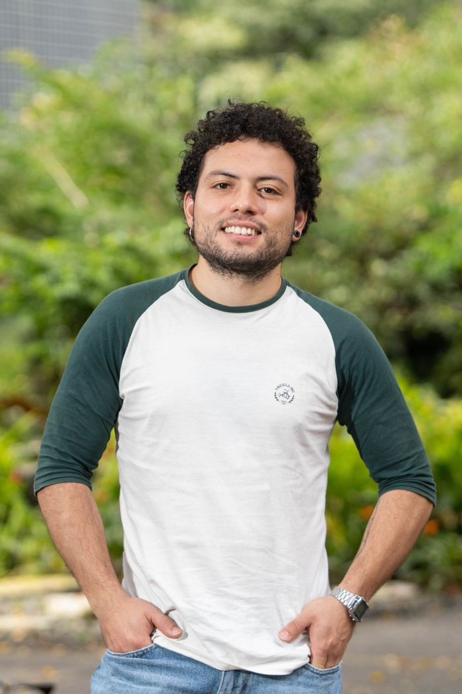
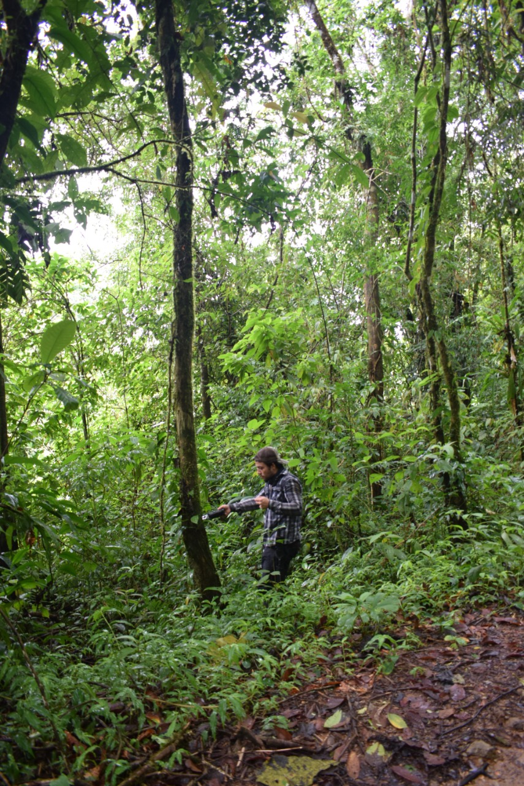
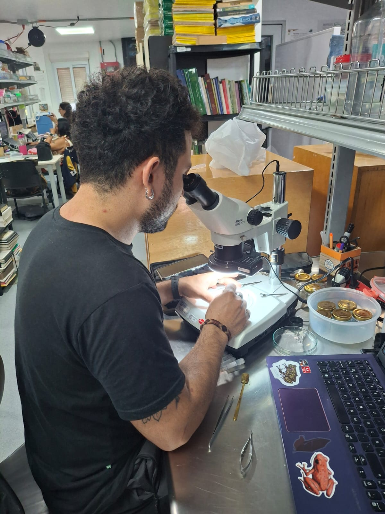
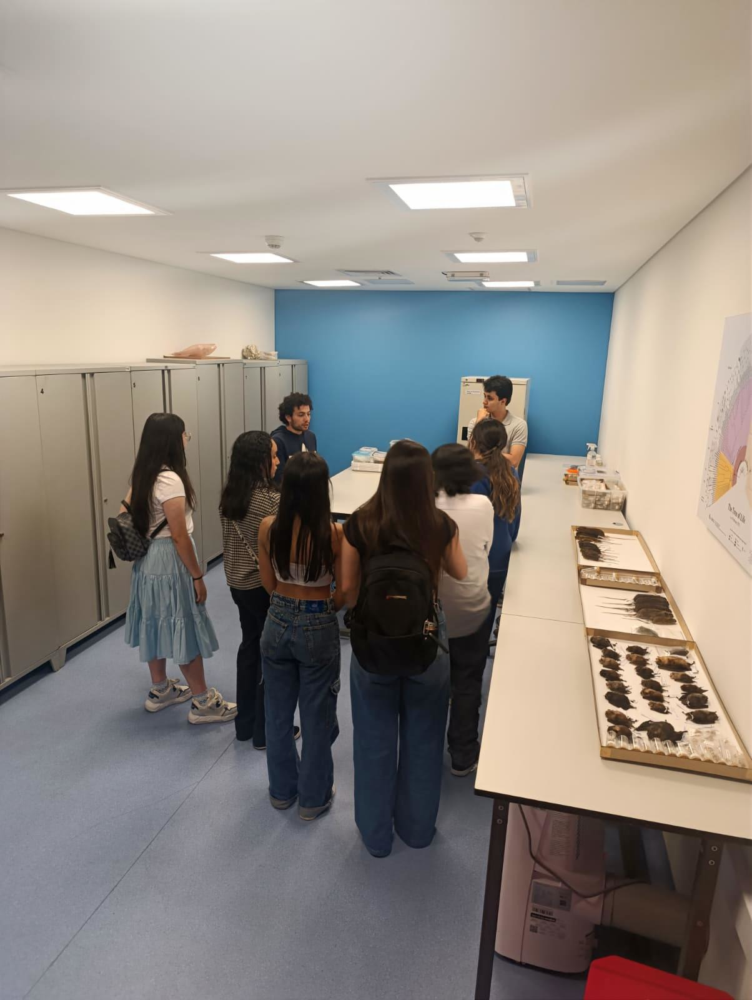

I am a biologist from Medellín, Colombia, with a deep interest in the amphibians and reptiles, with emphasis on the Neotropics. My research focuses on bioacoustics and taxonomy — using frog calls to understand species boundaries and evolutionary relationships in one of the most diverse regions on earth.
I have done fieldwork across Colombia, specially the Chocoan rainforest and the Andean cloud forests. I have also collaborated on environmental assessments, conservation planning, and biological collections work.
I am currently based in Medellín and open to collaborations, field projects, and graduate opportunities.
I am a biologist from Colombia, born into a family with deep rural roots. My grandparents were displaced by violence around the time of my birth, forcing my family to seek safety in Medellín. Life in the city was difficult, and we eventually moved again to a small village. There, I attended a rural school and walked two hours each day through patches of jungle, rivers, and pastures. Along the way, I discovered the natural world with fascination—watching tadpoles, chasing birds and snakes, or sometimes running from cows. Those walks nurtured my curiosity for nature.
Later, I returned to the city to finish high school. Thanks to my strong results on the national exams, I earned a scholarship and became the first in my family to attend university. While studying biology, I returned to the same village of my childhood to conduct fieldwork. Walking those familiar paths, I finally encountered a poison dart frog species I had long heard but never seen: Andinobates opisthomelas. Its bright red color captivated me and inspired my undergraduate thesis, published in the South American Journal of Herpetology.
To support myself during university, I worked alongside my studies—always seeking opportunities related to biology. I participated in consulting projects, conducting environmental fieldwork and writing impact assessments, which sharpened my analytical skills. I also had the privilege of working in the science education and outreach section at the Museo de Ciencias Naturales de La Salle, where I learned to communicate science to children and adults. In my free time, I immersed myself in the specimen reference collection, learning to identify the vast diversity guarded there.
For my mandatory internship, I worked at an ecotourism hotel on Colombia’s Pacific coast. I guided whale-watching activities and forest interpretation walks, while also conducting independent fieldwork on amphibians and reptiles in one of the most biodiverse regions on the planet.
Throughout my undergraduate years, I was fortunate to be mentored by Professor Juan Camilo Arredondo, a PhD graduate from the Universidade de São Paulo (USP). He consistently encouraged me to do research and publish, highlighting the strength of a well-rounded resume. Now I’m in search of a postgraduate in which I aspire to deepen my expertise in taxonomy, bioacoustics, and systematics, and to contribute to the conservation of Colombia’s extraordinary biodiversity.
My academic contributions are listed below, including articles published in indexed journals, manuscripts in preparation, conference presentations and taxa I've described. These works are organized chronologically and reflect my interests
I have acted as a reviewer for the following scientific journals:
The acoustic environment of tropical forests is among the richest and most biologically complex on Earth. A significant portion of this soundscape is produced by anurans — the group that includes all frogs and toads. The most common type of vocalization in this group is the advertisement call, a signal males produce to attract mates and deter rivals. Because females of a given species preferentially respond to the calls of conspecific males, advertisement calls act as prezygotic barriers — mechanisms that prevent reproduction between individuals of different species before fertilization can occur, and therefore play a central role in the origin and maintenance of species boundaries. The central focus of my research so far is to understand how these vocalizations can be leveraged to address fundamental questions in taxonomy, systematics, and natural history. My ongoing research falls (but it is not limited) into the following focal areas:

Advertisement calls are species-specific signals shaped by sexual selection and reproductive isolation, making them powerful to delimit species boundaries, uncover cryptic diversity, and infer evolutionary relationships. A critical first step in applying bioacoustics to systematics is the formal description of calls for species whose vocalizations remain unknown. Much of my work is dedicated to filling these gaps — documenting the advertisement calls of poorly known Colombian anurans and establishing the acoustic baselines necessary to use sound as a diagnostic character. Building on these descriptions, I have contributed to the formal description of new species in which acoustic data, alongside morphological evidence, provide key characters that define and diagnose the new taxa. This integrative approach reflects my broader interest in using bioacoustics not merely as a survey tool, but as a rigorous source of taxonomic evidence.
A work done with collegues on the granular glassfrog Cochranella granulosa revealed geographic call variation across its distribution in Colombia, thus suggesting hiden diversity highlighting and higlinding the importance of integrating acoustic data into taxonomic revisions. I have also described advertisement calls for understudied species such as Serranobatrachus sanctaemartae and distress calls for Smilisca phaeota. These contributions provide baseline data for future taxonomic and evolutionary research and monitoring and conservation efforts.

Sound characters alone cannot resolve taxonomic problems if the foundational question of which species we are talking about remains unanswered. A persistent challenge in tropical biodiversity science is the existence of multiple overlapping shortfalls: the Linnean shortfall — the vast number of species still awaiting formal description — and the Wallacean shortfall — our incomplete knowledge of where known species actually occur. Underlying both is a subtler and often overlooked problem: the taxonomic impediment. The global shortage of trained taxonomists means that the pace at which new species are being described is far outstripped by the rate at which biodiversity is being lost, and that even described species frequently remain poorly understood for decades.
I am part of a new generation of researchers committed to practicing taxonomy as a rigorous, integrative science — and equally committed to inspiring others to pursue it. Taxonomy is not a relic of 19th-century natural history; it is the indispensable foundation upon which all of biology rests, and it urgently needs practitioners. Central to this vision is the role of biological collections — not only as repositories of historical specimens, but as active scientific infrastructure. Enriching collections in developing countries, where a disproportionate share of global biodiversity is concentrated, is not merely a curatorial concern: it is a prerequisite for rigorous, locally grounded taxonomy that does not depend entirely on specimens housed in institutions thousands of kilometers away. By improving taxonomic knowledge, I aim to support conservation decisions and biodiversity management in megadiverse regions.

"Science is a way of thinking much more than it is a body of knowledge." — Carl Sagan
This is, perhaps, the most underappreciated truth in science communication. Popular accounts of outreach often reduce it to the transfer of facts — teaching people that frogs are declining, that the Chocó is biodiverse, that species have Latin names. But that conception misses the point entirely. What science actually has to offer the public is not a collection of data; it is a way of approaching the world — with curiosity, with skepticism, with a willingness to revise what you think you know in the face of new evidence. Teaching people to think critically is, in my view, the deepest purpose of science communication, and the one most worth pursuing. And critical thinking, once learned, does not stay confined to biology — it spills into how people read the news, evaluate a political candidate, or decide what kind of future they want to live in.
This conviction has shaped my engagement work across very different contexts. In the Chocó, working as a naturalist guide during humpback whale season, I rarely led with facts. Instead, I tried to lead with consequences and questions. What does it mean that an animal this size, with this physiology, travels thousands of kilometers to give birth in these waters? What does it tell us about how interconnected the world is — and about what is at stake when we fail to protect it? What kind of future does a community build around a living whale, versus a dead one? These conversations, held on boats in the Pacific with visitors from all walks of life, were never really about whales. They were about how we value nature, how we make collective decisions, and how a region historically marked by conflict and neglect can find dignity and economic sovereignty through the knowledge its own ecosystems hold. In the forest, walking with communities through landscapes they had lived in for generations but rarely been invited to see through a scientific lens, the goal was the same: not to explain, but to prompt a different kind of looking.
At the Museo de Ciencias Naturales de La Salle in Medellín, I worked with adults and children who often arrived not knowing what a natural history collection is or why it exists. I tried to change not just that, but what they understood a collection to be for — not a cabinet of curiosities, but a decision-making tool. The specimens housed there represent irreplaceable information about what lived where, when, and in what abundance. That information is what allows scientists, and ultimately governments, to make conservation decisions grounded in evidence rather than assumption. Helping visitors understand that connection — between a pinned frog in a drawer and a policy that protects a watershed — is, I think, one of the most political acts a scientist can perform. Because a public that understands how knowledge is built is a public better equipped to demand that it be used wisely.
I am always happy to hear from fellow researchers, potential collaborators, or anyone curious about Colombian herpetology. The best way to reach me is by email.
jdurangocardona@gmail.com jduran11@eafit.edu.co